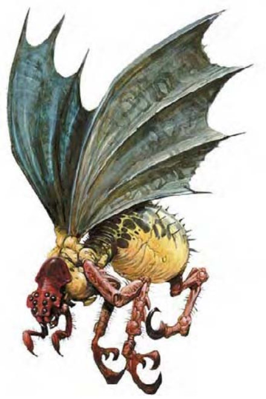

他们长得像庞大的双足大黄蜂，有一对短小的前肢和巨蝠翼。
食蛛兽的性情与其丑恶的外表相符。尽管如此，这种掠食生物仍被视为宝贵的飞行座骑。他们的名称来自其优秀的破网能力，且习惯将蛋产于被麻痹的巨大生物体内，通常是节肢动物。
食蛛兽约10英尺长、4英尺高，翼展20英尺。重达4000磅。
| 生命骰 | 4d10+20（42HP） |
| 先攻 | +1 |
| 速度 | 30英尺（6格）、飞行60英尺（良好） |
| 防御等级 | 14（-1体型、+1敏捷、+4天生）、接触10、措手不及13 |
| 基本攻击/擒抱 | +4 / +13 |
| 攻击 | 螫刺+8近战（1d8+5附加毒素） |
| 全力攻击 | 螫刺+8近战（1d8+5附加毒素）及啮咬+3近战（1d8+2） |
| 占据/触及 | 10英尺 / 5英尺 |
| 特殊攻击 | 殖卵、毒素 |
| 特殊能力 | 黑暗视觉60英尺、行动自如、昏暗视觉、灵敏嗅觉 |
| 豁免 | 强韧+9、反射+5、意志+2 |
| 属性 | 力量21、敏捷13、体质21、智力2、感知12、魅力10 |
| 技能 | 聆听+10、侦察+11 |
| 专长 | 警觉、闪避 |
| 环境 | 温带森林 |
| 组织 | 单独 |
| 宝藏 | 无 |
| 阵营 | 总是绝对中立 |
| 进化 | 5-12HD（超大型） |
| 等级修正值 | ― |
食蛛兽会用毒刺与强壮的大颚来攻击。他们的战术是先进行螫刺，紧接着迅速后退飞离敌人，盘旋以待毒液生效。食蛛兽不太愿意放弃猎物，若用法术或远程攻击驱赶他们，会遭受严厉的报复。
殖卵（特异）：雌食蛛兽会将卵产到体型在大型以上，且被麻痹的生物体内。幼兽在6周内会孵化，由里到外将宿主吃光。
毒素（特异）：每次造成伤害后，食蛛兽就会注入毒素（强韧检定的DC=17）。初始伤害无，后续伤害为麻痹1d8+5周。豁免检定DC的调整值与体质调整值相同。
行动自如（超自然）：食蛛兽可随时行动自如，与同名法术效果相同（施法者等级12）。成为座骑时，此效果不会延伸影响到骑者。
技能：食蛛兽在进行「聆听」与「侦察」检定时具有+4种族加值。
食蛛兽需要受训才能载人战斗。训练食蛛兽需时六周，并须通过「驯养动物」检定（DC=25）。骑乘食蛛兽需使用特别鞍座。食蛛兽可背负骑师进行攻击，但骑师若未通过「骑术」检定，则无法同时战斗。
食蛛兽蛋在开放市场中约值2000金币，幼兽则值3000金币。养育及训练单只食蛛兽的专业训练费用为3000金币。
负重能力：轻度负荷为306磅、中度负荷307-612磅、重度负荷613-920磅。